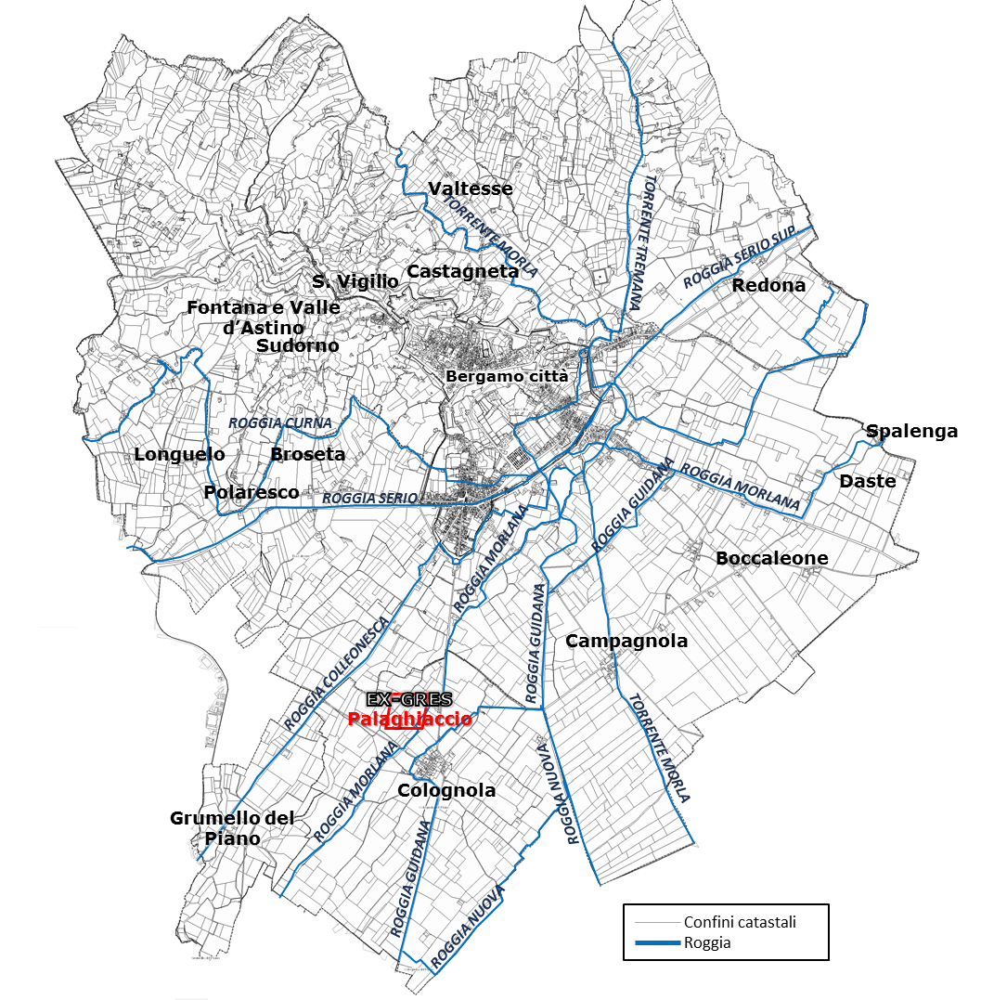
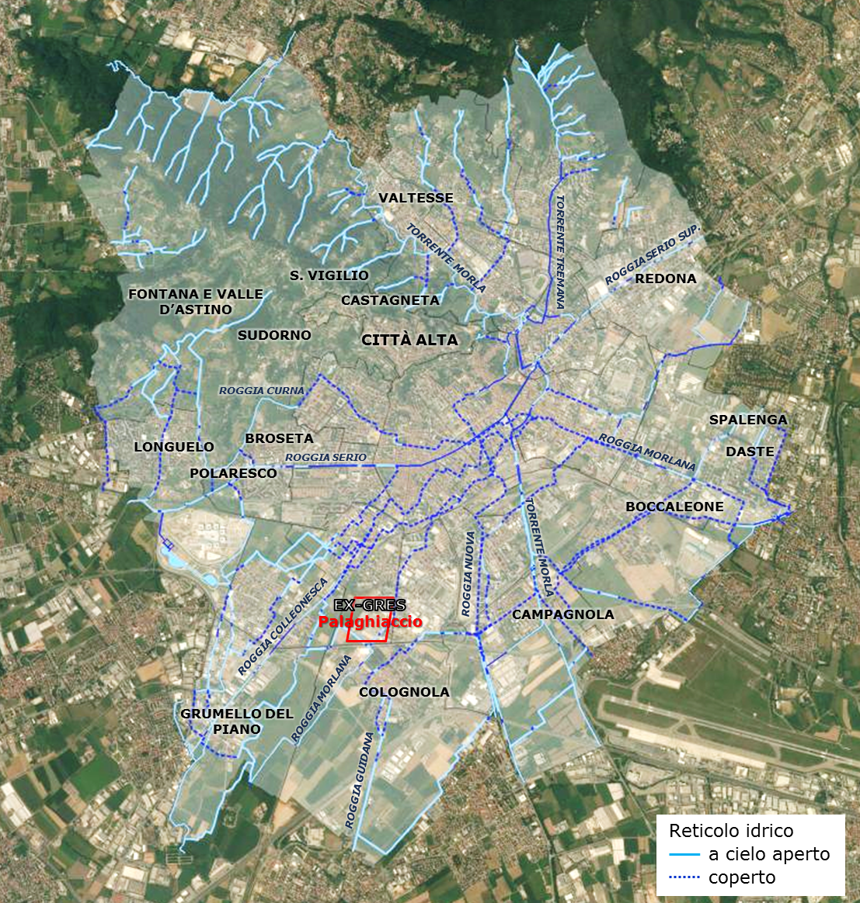
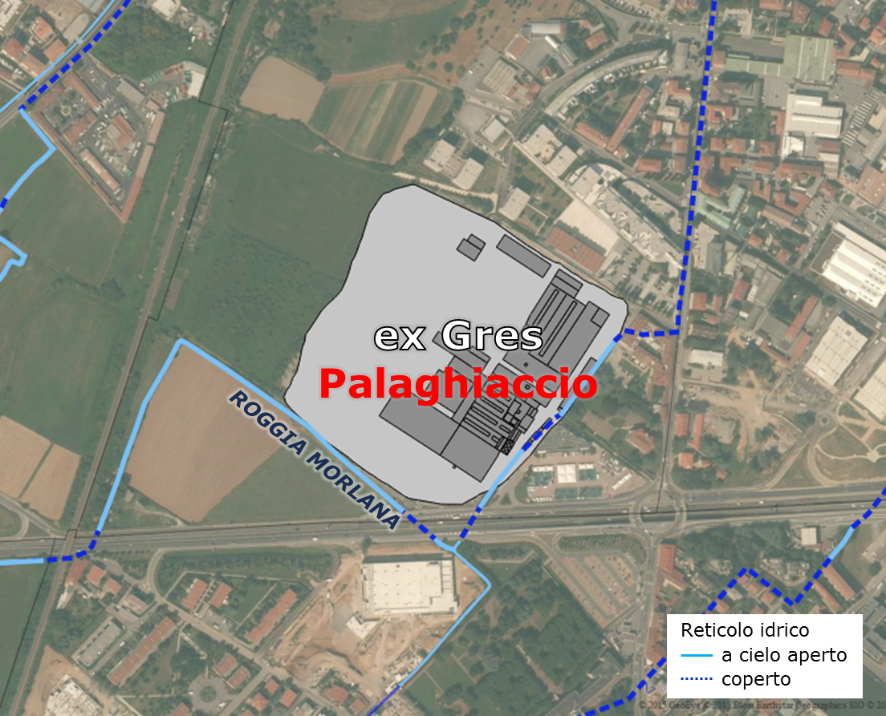

| IL SISTEMA DELLE ROGGE |
 Il
sistema delle rogge nel Catasto 1853 |
La peculiarità idrografica di Bergamo è data dal fatto
che la città non sorge nelle immediate vicinanze di un fiume. Il torrente
Quisa, che cinge alle spalle il sistema dei colli, è di limitata portata e non
interessa il sito in cui si sviluppò la città. Allo stesso modo, il torrente
Morla, che scorre nella zona orientale dei colli, ha un corso irregolare e una
scarsa utilità pratica per la vita della città, seppure abbia influenzato lo
sviluppo dei borghi nella città bassa (San Leonardo e Sant’Alessandro) (Pagani,
2000). Tale carenza idrica, tuttavia, non condizionò lo sviluppo della città ma
acuì una particolare capacità di gestione dell’acqua portando, nel tempo alla
costruzione di un insieme di canali che divennero elemento cruciale e del tutto
particolare per la vita e lo sviluppo della città. Tra i corsi d’acqua che
scorrono poco lontano dalla città è il Serio quello più importante per Bergamo,
poiché costituisce la fonte di derivazione della fitta rete di rogge, in quanto
la particolare posizione della città ai margini della fascia collinare
determina che i due fiumi alpini, Adda e Oglio, ma anche il Brembo, siano
scavati in letti troppo profondi rispetto al piano della città. Bergamo,
dunque, non si rivolse a tali corsi d’acqua per la navigazione e il trasporto
delle merci, né si dovette difendere dalle loro piene. Sviluppò viceversa un
rapporto simbiotico con l’acqua fatta giungere in città mediante un insieme di
opere idrauliche sapienti e complesse che attestano quanto essa fosse
considerata preziosa, certo, per tutti gli usi e consumi di una città ma anche
in relazione alla naturale aridità dei terreni caratterizzati da una pedologia
di alta pianura, e dunque costituiti
da materiali grossolani, che favoriscono la percolazione dell’acqua e che per
diventare fertili necessitano di irrigazione.
La realizzazione delle canalizzazioni, iniziata nel Medioevo e continuata nel XV secolo, interessa esclusivamente la parte piana del territorio cittadino. Questa rete sembra quindi esterna alla città, anche se in realtà è integrata fortemente con essa, infatti, l’acqua ha contribuito in modo preponderante a definire quella gerarchia di piani altimetrici distinti che caratterizza Bergamo: la città storica, in posizione elevata sui colli, con il Castello di San Vigilio, i borghi che sostanziano e delimitano la città bassa e infine il rosario dei Corpi Santi che completa e conclude tale sistema. In questo contesto, la creazione dei canali definisce una precisa specializzazione funzionale dell’area dei Corpi Santi per la produzione orticola che serviva la città. I canali diventano quindi generatori di processi di territorializzazione urbana. Il canale principale, anche per le sue dimensioni, è la Roggia Serio, costruita tra fine XII e inizio XIII secolo, quando la continua aggregazione di nuovi borghi poneva accresciute esigenze per la vita e il lavoro e le ampie proprietà comunali potevano essere potenziate grazie all’irrigazione. Il percorso della roggia definisce la specializzazione funzionale di alcune parti della città, con la localizzazione di mulini, magli, filatoi, opifici, così come delle prime industrie ottocentesche. Essa inoltre svolse, fino all’800, il ruolo di "fossato" della città storica, correndo lungo le Muraine, le mura trecentesche costruite per volere dei Visconti, signori di Milano, identificando il limite daziario e difendendo la parte storica urbana di Città bassa. |
|  Il
reticolo idrico attuale della città di Bergamo, in cui vengono
evidenziate le rogge ancora oggi a cielo aperto e i tratti che sono
stati coperti |
Seconda per importanza è la Roggia Morlana, costruita
nel XII secolo. Vista
la forte pendenza dell’alveo, anticamente furono create molte "cadute" – salti
di pendenza –, diventando non solo una importante fonte di irrigazione per i
campi, ma anche di forza motrice per le industrie. Da questi due canali
principali ne furono derivati altri, che contribuirono allo sviluppo della
città: dalla Roggia Serio derivano la Roggia Nuova e la Roggia Morla (di
Campagnola e di Comun Nuovo), mentre dal canale Morlana la Roggia Curna e la
Roggia Colleonesca. Altre due rogge derivate dal fiume Serio sono la Roggia
Guidana, costruita prima del 1453, che nel suo percorso, partiva da Alzano e,
giungendo in città, incorniciava l’abitato di Colognola sul lato occidentale
proseguendo poi a sud verso Stezzano, e la Roggia Pomperduto, appartenuta
all’abazia di Astino. Questa corre più esterna rispetto alle altre e, arrivata
a Seriate, si divide in tre rami, tra cui quelli di Boccaleone e di Campagnola
nel territorio di Bergamo. Tutti questi canali costituiscono un vero e proprio sistema idrico che, nonostante venisse utilizzato esclusivamente per azionare opifici e per l’irrigazione e non per la navigazione, contribuì a tessere stretti rapporti funzionali tra le diverse parti della città. Con lo sviluppo industriale, a partire dalla metà del ‘900, questi canali sono stati utilizzati spesso come scarichi civili o industriali, con significativi segni di inquinamento. Le rogge, quindi, diventarono progressivamente un problema, risolto spesso con il loro parziale o totale interramento. Solo in anni recenti si è riscoperto il valore storico di tali tracciati, con lo svilupparsi, a livello nazionale, di iniziative volte a valorizzare e recuperare i percorsi di antiche rogge e canali. Se analizziamo nello specifico l’area in cui è localizzato l’ex-Gres, nella porzione sud-occidentale della città, possiamo rilevare la presenza della Roggia Morlana, che attraversa proprio l’area in cui oggi sorge lo stabilimento. Sulla roggia, localizzato a nord dell’attuale ex-Gres, sorgeva un opificio (Sega da legnami ad acqua; torchio da olio ad acqua) con casa annessa, di proprietà della famiglia Rampinelli, che sfruttava la forza motrice della roggia (Guelfi, 2006).  Reticolo idrrografico nell'area dell'ex-Gres, dove ancora oggi è visibile la roggia Morlana |